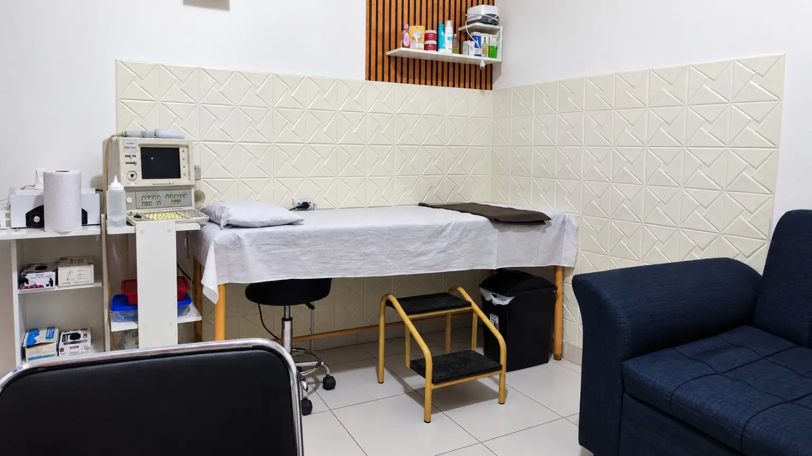

Higiene y cuidado
Mantenemos protocolos de limpieza y desinfección para brindar un entorno cuidado y seguro.

Consulta médica con visión integral, orientada a prevención, diagnóstico, seguimiento y educación del paciente.
Contamos con un ambiente limpio y acondicionado para brindarte una mejor atención, priorizando la higiene, la comodidad y la seguridad durante cada consulta.
Nuestro consultorio está organizado para ofrecer una atención cercana y profesional, en un entorno tranquilo donde puedas sentirte cómodo, escuchado y bien atendido.

Mantenemos protocolos de limpieza y desinfección para brindar un entorno cuidado y seguro.
Atención cercana, respetuosa y centrada en el bienestar de cada paciente.
Un consultorio organizado y funcional para una valoración médica profesional.
Un espacio tranquilo pensado para que puedas sentirte en confianza durante tu consulta.

La ecografía abdominal es un estudio de imagen no invasivo que utiliza ondas de ultrasonido para observar diferentes órganos y estructuras del abdomen. Puede aportar información útil sobre su tamaño, forma y características, y ayudar a identificar determinados hallazgos que deben interpretarse junto con la evaluación médica.
Dependiendo de la indicación clínica y de las condiciones del estudio, permite valorar:
Según la indicación médica, puede ayudar a identificar o valorar:
La necesidad y el alcance del estudio dependen de cada paciente. Puede indicarse ante:
Preparación del pacienteLa preparación puede variar según las estructuras que necesiten evaluarse. En determinados estudios puede solicitarse ayuno o acudir con la vejiga llena. Al momento de agendar se indicará la preparación correspondiente.